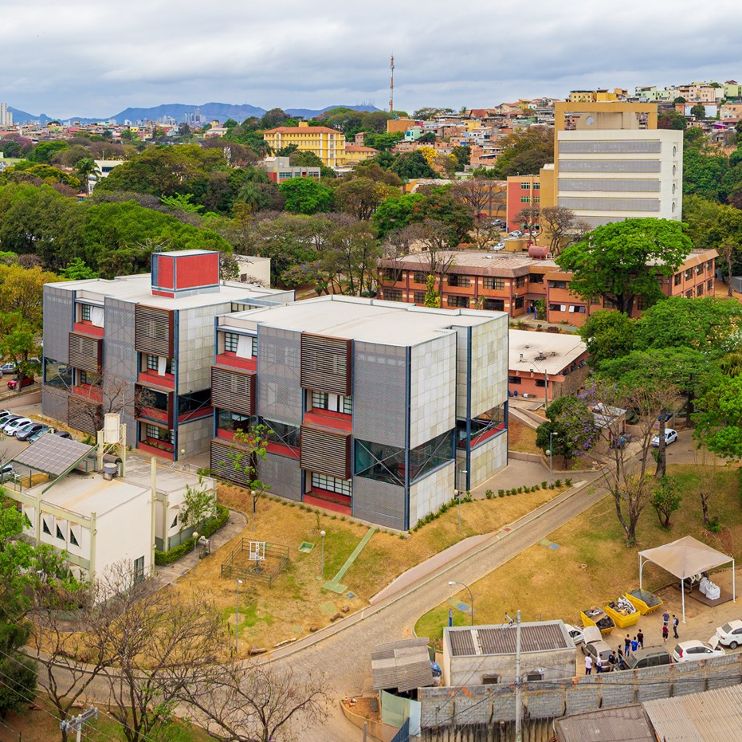
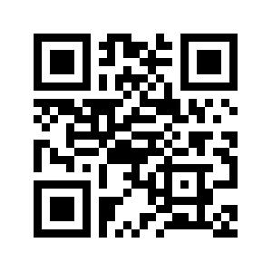

Início
Bem vindo! Meu nome é Nícolas Chagas, aluno do Cefet-MG. Construí este site visando me apresentar para uma vaga para um projeto de extensão usando o que eu aprendi no Curso de Informática do Cefet-MG. Nele, constam as seguintes seções que podem ser acessadas pelo menu lateral:
- Início, onde é feita uma breve introdução;
- O curso: que contém uma apresentação do curso mais detalhada, descrevendo nossas atividades atuais;
- Sobre a página: uma sessão dedicada a expor detalhes sobre a construção do site, uso de js, e outros recursos.
O Curso
Primeiro ano:
- Lógica de programação com C;
- Fundamentos de Hardware e formatação;
- Lógica de programação para web;
- Projeto principal: site(s) estático e/ou com JS.
Segundo ano:
- Php server;
- Java desktop e para web;
- Sistemas digitais e circuitos lógicos;
- Projeto principal: Sistema completo de gestão.
Terceiro ano:
- Empreendedorismo;
- Estoque;
- TCC.
Sobre a página

Já no primeiro ano, são intrudozidos recursos de desenvolvimento web como HTML5, CSS e JS, com os quais esta página foi construída. Você será capaz de criar sites estáticos e também usando JavaScript. A seguir está um detalhamento sobre alguns recursos utilizados no site.
Temas dinâmicos
A página conta com um switch que, através de um função de JS, aplica individualmente um tema claro ou escuro para cada determinado elemento, Assim como faz o uso da API matchMedia() para detectar o tema padrão do usuário e aplicar por JS.
Ícones
Os ícones , , , usei do site Fontawesome, e podem ser manipulados como uma fonte por CSS.
Responsividade
As medidas no site são relativas e fiz o uso de media queries para adaptá-lo para todos os tamanho de tela. O menu lateral e o layout são adaptados para melhor visibilidade em dispositivos móveis. Além disso, o tamanho dos elementos e fontes são adaptados para cada resolução. Dessa forma, a experiência mobile é tão boa quanto a por um computador!